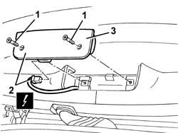
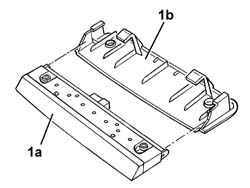

5550D16 third stop light - r+r
- Path
- Procedures > 55 ELECTRICAL EQUIPMENT > 5550 MANOEUVRING AND WARNING SIGNALS > 5550D brake and reversing lights > 5550D16 third stop light - r+r
- Kind
- repair procedure (removal / refitting; the operation number is the code)
- Applies to
- all engines; all production periods
- Interactive page
- https://sloeber94.github.io/elrnDB-a147/en/#/3025582
Applies to: all engines; all production periods
 Removing
Removing
 Refitting
RefittingOpen the tailgate.
1. Unscrew the bolts
2. Move the trim with the third brake light slightly and disconnect the electrical connection.
 | Name | Connector |
|---|---|---|
2 | Additional ("third brake light") |
3. Recover the third brake light.

Applies to: all engines; all production periods
1. If necessary, release the third brake light (1a) from the trim (1b).

Applies to: all engines; all production periods
Refitting
RemovingCheck that the third brake light is not damaged.
If removed, engage the third brake light in its housing in the trim.
Connect the electrical connection
Fit the moulding with the third brake light and tighten the bolts.
Close the tailgate.
Check the operation of the third brake light.
Topics linked from this page (1)
Topics that link to this page (7)
- I16 CENTRE BRAKE LIGHT ("THIRD BRAKE LIGHT") NOT WORKING
- 5505C41 cabin wiring - r r
- 5550D17 third brake light - r r
- 7015A58 internal tailgate moulding (one) - r+r
- 7035B14 rear window glass r r includes cleaning of housing
- 7035B16 Tailgate windscreen (bonded type) WINDOW GLASS - R.R. - Includes. cleaning housing in tailgate
- 7210E56 R.R. TAILGATE